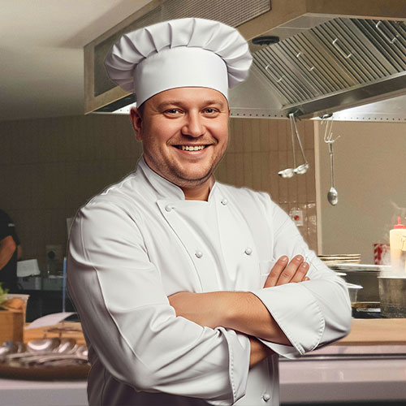

При заказе от 2500 руб.
Скидка 25%!!!
О ресторане
Гендзё – это современный японский ресторан, где наряду с прогрессивным подходом трепетно сохраняются традиции и аутентичность. Расположен на берегу озера «Ойке» в самом большом японском саду вне территории Японии, Архитектурный стиль «Сёин-дзукури» (яп. 書院造り), «кабинетный стиль».
Особое внимание заслуживает кухня, в основе которой лежит высокое качество уникальных, премиальных продуктов, поставляемых из Японии: устрицы Муроцу, Голубой тунец Чу Торо, говядина Вагю категории а4 и а5, рис Косиибуки, водоросли и другие…
Наши приоритеты в приготовлении блюд – это следование традиционным технологиям, сохранение свежести продуктов, и аутентичность вкуса.
Шеф-сомелье Мария Каримова собрала обширную коллекцию традиционных японских напитков – более 50 наименований – от базовых до супер премиальных Нихонсю, которые сервируются по бокалам. Для гостей доступны дегустационные сеты – это возможность познакомиться с сакэ в разных стилях. Отдельная гордость – полная коллекция вин Галицкий и Галицкий, включая лимитированные релизы. Все вина Галицкий и Галицкий также доступны к заказу по бокалам.
Гендзё – это кульминация путешествия по саду.
Наши повара
|  |
|
|
|
Александр Сергеевич Морозов
Шеф-повар |
Дмитрий Алексеевич Соколов
Су-шеф
Повар горячего цеха |
Инна Романовна Меркушева
Повар-кондитер |
Павел Викторович Орлов
Повар холодного цеха
Сушист |
Отзывы
Кондрик Вадим Романович
Лучше ресторана вам не найти реально вкусно спасибо первоклассным поварам!!!
Anonim_412
Япона мать отличный ресторан с аутентичной японской кухней. Цены адыкватные. Особенно понравились суши.
Nasha_nyasha12
Прекрасное место для спокойного ужина. Еда вкусная, порции щедрые, обслуживание на уровне. Атмосфера умиротворения и спокойствия. Рекомендую всем!